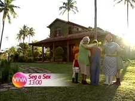

Sítio do Picapau Amarelo
| reprisado de | 19/05/2010 a 30/03/2012 |
|---|---|
| em 503 episódios e 2 especiais (20 pulos) | |
| frequência | segunda-feira a sexta-feira |
| faixa | uma da tarde |
| horário alternativo | seg a sex, 8h |
Seriado infantil baseado na obra de Monteiro Lobato e exibido nas manhãs da Globo de 2001 a 2007, constituindo uma 2ª versão do programa que marcou época entre as décadas de 1970 e 1980 na mesma emissora. Distante da perturbação das grandes cidades, as redondezas de um simpático sítio abrigam histórias repletas de aventura e fantasia junto a personagens do folclore brasileiro e de fábulas clássicas da literatura mundial. Cada arco narrativo é apresentado em capítulos diários. Do montante que chegou a ser reprisado no Canal Viva, a 1ª temporada foi a única inteiramente adaptada dos livros de Monteiro Lobato.
Sítio do Picapau Amarelo foi o primeiro programa de cunho infantojuvenil a ser exibido no Viva, estreado às oito da manhã de 19/05/2010, quarta-feira. Na grade inicial, esse tipo de conteúdo ocupava uma sequência matutina, que, para além do Sítio, exibia Sandy & Junior e Malhação: às 8h, às 8h30 e às 9h, respectivamente, sem horários alternativos. Em agosto de 2010, a edição do dia de Mais Você, que tinha dois horários no Viva (13h a 14h30 e 18h a 19h30) perdeu o trecho do início da tarde. Assim, escalou-se a sequência Sítio do Picapau Amarelo / Sandy & Junior / Malhação para 13h, 13h30 e 14h, respectivamente. Os horários da manhã não foram descontinuados, e tornaram-se alternativos.
Essa versão estreou, na Globo, na sexta-feira de 12/10/2001, Dia das Crianças. À época, cada história do Sítio desmembrava-se em 5 capítulos; ou seja, uma trama central começava na segunda-feira e resolvia-se na sexta-feira. Contrariando a regra, a história que abre o programa, "Reino Das Águas Claras", em razão da data de estreia, foi apresentada originalmente em 6 capítulos. O Viva, no entanto, utilizou uma versão que os recompõe no padrão apresentado pela maioria da temporada, em 5 capítulos.
Os capítulos de Sítio do Picapau Amarelo eram encerrados com os personagens falando diretamente com o público, convidando-o a acessar a página do programa na internet; ainda, com uma pequena prévia das cenas do capítulo seguinte. Na exibição do Viva, esses momentos foram cortados.
Em dezembro de 2010, a reprise realizou um pulo (o único verificado no Viva) de 20 capítulos. Trata-se das 4 primeiras semanas da saga "Memórias do Picapau Amarelo", última história da 1ª temporada, exibida originalmente em 35 capítulos. Na prática, "Memórias do Picapau Amarelo" constitui-se da reprise de histórias exibidas em 2001 (à exceção de "Viagem ao País das Fábulas" e "Festa do Faz de Conta"), entremeadas por cenas inéditas dos personagens relembrando e e escrevendo os acontecimentos destes capítulos.
2 programas especiais do Sítio, exibidos pela Globo em horário nobre, também foram reprisados, mas em período diferente ao do horário convencional. "A Festa da Cuca", especial exibido em 26/12/2001 (terça-feira), foi reprisado em 26/12/2010, domingo, às 11h30. O programa especial de 2002, exibido na noite de Natal daquele ano, foi reprisado em 25/12/2011, domingo, também pela manhã.
Na última semana de março de 2012, após a exibição da história "A Dama Dos Pés de Cabra", de 2004, o Viva estranhamente interrompeu a continuidade original do programa e reexibiu a história "Fábulas", de 2002, já reprisada em novembro de 2010. Na semana seguinte, já em abril de 2012, Sítio do Picapau Amarelo saiu do ar, sendo substituído pela continuição de um ciclo interrompido de Armação Ilimitada - que, pela maior duração de seus episódios, empurrou a exibição de Caça Talentos, antes às 13h30, para às 14h.
chamadas
Quando o Viva estreou, todos os programas de sua faixa infantojuvenil eram anunciados em uma mesma chamada. "Você conhece a pílula falante? Sabe o que significa dig-dig-joy dig-joy-popoy? E lembra do Perereca e sua turma? Então, o seu lugar é aqui no Viva! De segunda a sexta, a partir das oito da manhã: Sítio do Picapau Amarelo, Sandy & Junior e Malhação."

Em agosto, a mesma chamada foi atualizada com os novos horários principais das atrações.

Uma chamada própria passou a se fazer presente com o novo horário: "Era uma vez uma boneca de pano que desatou a falar... falar... e nunca mais fechou a torneirinha de asneiras! De segunda a sexta, uma da tarde, você vai viver mágicas aventuras, no Sítio do Picapau Amarelo!"
- 
No mês de outubro de 2010, com o ingresso de Caça Talentos à sequência diária de infantojuvenis, a chamada em conjunto foi atualizada: "Aqui a gente sabe como é bom ser criança! Mas, convenhamos, crescer também é uma delícia. Suas tardes são mais divertidas com o Sítio do Picapau Amarelo, Caça Talentos e Malhação!"

Em 2011, o combo de atrações infantojuvenis ganhou uma promoção com locução infantil: "Nós, crianças, também temos vez no canal Viva: segunda, terça, quarta, quinta e sexta tem Sítio do Picapau Amarelo, Caça Talentos e Malhação. Malhação não é pra criança pequena, é pra criança grande, hein? Viva, o canal do seu jeito."
Em 2012, a chamada dialogava com os personagens, dizendo "é um prazer ter vocês aqui no Viva".